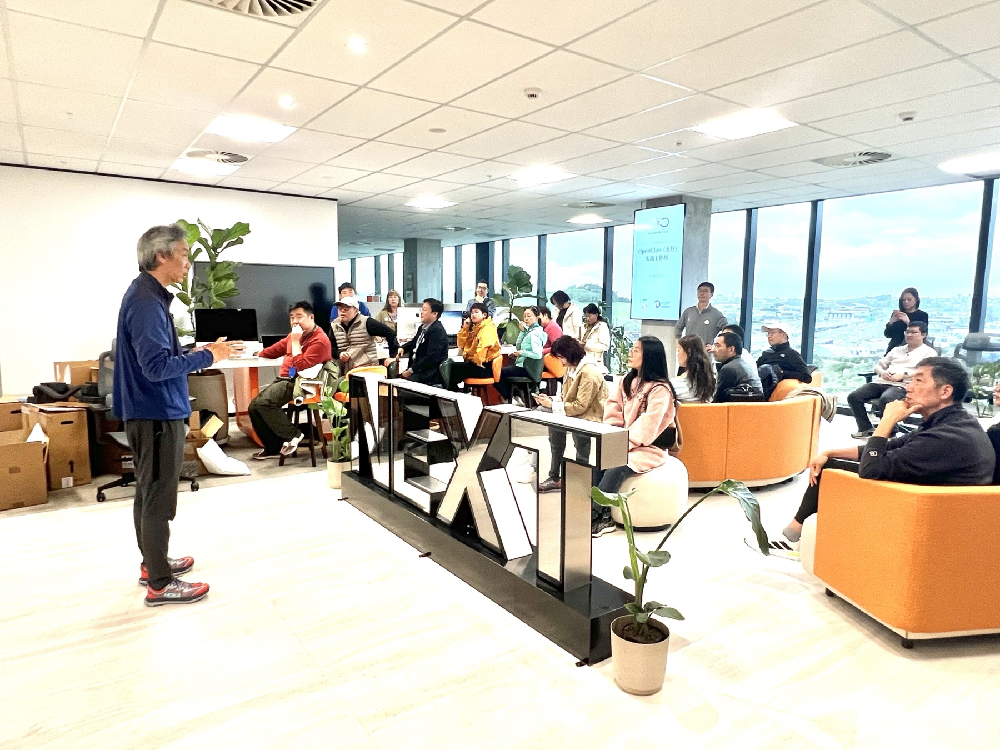

NewBee AI Club 第一期实操工作坊在高五咖啡所在的 NEXT Park 举行。活动没有停留在概念介绍，而是让参与者带着自己的电脑进入现场，从安装、配置到真实任务演示，直接体验 OpenClaw 如何成为个人和团队的 AI 自动化助手。
不是再听一遍“AI 可以做什么”，而是亲手完成一次配置，让 AI 真正进入自己的工作现场。
工作坊做了什么
- 免费安装 OpenClaw从基础环境开始，完成现场安装与启动。
- 配置与使用指导逐步理解连接方式、权限和操作流程。
- AI 自动化协作亲手体验智能体如何理解任务并协助执行。
- 真实场景演示围绕邮件、日历和信息检索展示落地方法。
三个真实工作场景
邮件：面对收件箱信息过载，利用 AI 识别重点、整理关键信息，降低被大量消息淹没的风险。
日历：把分散在不同平台的日程和会议信息集中理解，提升追踪与协调效率。
信息检索：针对来源分散、人工查找耗时的问题，让 AI 辅助检索、汇总和形成可继续处理的信息。
现场实操
参与者围绕电脑进行安装和配置，主讲嘉宾在现场逐步讲解并答疑。工作坊面向希望减少重复工作的职场人士、准备采用 AI 自动化的用户，以及关注 AI 落地应用的企业负责人和团队。

活动信息
时间：2026 年 6 月 5 日，13:30–15:30
地点：NEXT Park 国际展望科技园，Level 1, 55 Corinthian Drive, Albany, Auckland
主讲嘉宾：Fred Zhang、Harry Zheng
联合场地：High Five 高五咖啡、NEXT Park
本页依据活动通知、原始海报与现场照片整理；活动已圆满结束，海报二维码仅作为历史资料保留。